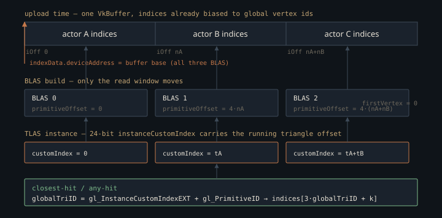

Monograph · Tree · ← Module hub · Acceleration structures
path-tracer
Acceleration structures
BLAS/TLAS API, rebuild vs update.
One buffer, many structures
A bottom-level acceleration structure has to be told where its triangles live, and the obvious answer — give every mesh its own vertex and index buffer — is the one OHAO refuses. Scene upload concatenates all actors into a single vertex buffer and a single index buffer, rewriting each mesh's indices to be global as it goes:
combinedIndices.push_back(index + vertexOffset);ohao/gpu/vulkan/scene_upload.cpp:81Everything else in this unit falls out of that. A BLAS is built by handing the driver the *base* device address of both shared buffers — not a sub-range — and moving only the read window, through `primitiveOffset` in the build range info, to that mesh's slice of the index array. Because the indices already carry the vertex bias, the build must not apply a second one, so `firstVertex` stays at zero:
rangeInfo.firstVertex = 0; // indices are already globalohao/render/rt/rt_acceleration_structure.cpp:291and `maxVertex` — the highest vertex index the build is permitted to touch — is reconstructed as a *global* index by dividing the caller's byte offset back out by the stride:
triangles.maxVertex = vertexCount + static_cast<uint32_t>(vertexByteOffset / vertexStride) - 1; // max global indexohao/render/rt/rt_acceleration_structure.cpp:222That round trip is exact only because the byte offset was formed by multiplying by the same stride one call earlier — the sort of line that survives review and dies to a refactor.
The payoff is in the hit shaders. `gl_InstanceCustomIndexEXT + gl_PrimitiveID` addresses two flat SSBOs with no load in between — the shared index buffer, at `globalTriID * 3`, and the per-triangle material-ID array, unscaled:
uint matID = matIDBuf.matIDs[globalTriID];shaders/rt/pt_closesthit.rchit:96Vertex attributes sit a hop further out — the three indices must come back from `indexBuf` before `uvBuf` and `normalBuf` can be addressed at all — and material parameters a hop past the fetched `matID`. The shared buffer buys a flat *top-level* address, not a dependency-free hit path.
The rejected alternative is per-mesh buffers plus a per-instance geometry descriptor table the hit shaders dereference — what a bindless buffer array exists for, and what most engines do. OHAO took the shared buffer because that table collapses into arithmetic: nothing per-instance has to be loaded before the index and material-ID arrays can be read, and the indirection that remains is data any layout would fetch anyway. The price is that geometry numbering is global: no mesh can be re-uploaded without renumbering everything after it.
The 24 bits nobody budgeted
The field that makes the flat addressing work is `instanceCustomIndex`. The header still describes it as generic user data:
uint32_t customIndex = 0; // user data (e.g. actor index)ohao/render/rt/rt_acceleration_structure.hpp:44but the only producer in the tree passes the running triangle offset instead:
m_rtAccel->addInstance(blasIt->second, actor->getTransform()->getWorldMatrix(), globalTriOffset, instanceMask);ohao/gpu/vulkan/rt_build.cpp:867and the hit shaders close the loop by adding the BLAS-local primitive id back on:
uint globalTriID = gl_InstanceCustomIndexEXT + gl_PrimitiveID;shaders/rt/pt_closesthit.rchit:48`VkAccelerationStructureInstanceKHR::instanceCustomIndex` is a 24-bit bitfield. What goes into it is a *running* offset, advanced by each instance's triangle count as the actor walk proceeds:
globalTriOffset += it2->second.indexCount / 3;ohao/gpu/vulkan/rt_build.cpp:900so the invariant is per-instance, not per-scene: no instance may *begin* past 16,777,215. A scene whose last mesh is enormous can legally hold more triangles than that; one made of many small meshes wraps as soon as the accumulated offset does. Either way the failure is silent — a `uint32_t` assigned straight into the bitfield truncates,
vkInst.instanceCustomIndex = inst.customIndex;ohao/render/rt/rt_acceleration_structure.cpp:444and every hit past the wrap reads a wrong material id and wrong normals instead of faulting. Nothing in the class range-checks it.

Stride 100, of which 12 are read
The vertex stride given to the AS builder is the raster vertex stride, unchanged:
m_rtVertexBuffer, meshInfo.vertexCount, sizeof(Vertex),ohao/gpu/vulkan/rt_build.cpp:846`Vertex` is the full interleaved raster layout — position, colour, normal, two UV sets, a tangent with handedness, four bone indices and four bone weights — 100 bytes. The build reads the leading `vec3` of each one and steps over the other 88.
The class already ships the alternative. `createBLASFromPositions` takes a tightly-packed position buffer at stride 12, documented for per-frame animated rebuilds:
// For per-frame animated mesh BLAS — uses PREFER_FAST_BUILD.ohao/render/rt/rt_acceleration_structure.hpp:92It has no callers anywhere in the tree, and no inlined equivalent either — `vkCmdBuildAccelerationStructuresKHR` appears in no other file in the engine. Skeletal animation was removed from the RT path and the packed variant went dormant with it.
Nor is there compaction. The two builders that actually run ask for `PREFER_FAST_TRACE` — `createBLAS` per mesh, `buildTLAS` for the instance list:
buildInfo.flags = VK_BUILD_ACCELERATION_STRUCTURE_PREFER_FAST_TRACE_BIT_KHR;ohao/render/rt/rt_acceleration_structure.cpp:238The dormant packed variant is the file's one `PREFER_FAST_BUILD`, exactly as its header above advertises. `ALLOW_COMPACTION` appears in no build in the engine, and there is no AS query pool to read a compacted size back through — the tree's only `vkCreateQueryPool` is the deferred renderer's timestamp pool. No compacted-size readback, no second build pass: BLAS memory stays at the driver's conservative build-time estimate.
The transpose that is really a memcpy
GLM stores a `mat4` column-major; `VkTransformMatrixKHR` is a row-major `float[3][4]`. The conversion is one transpose followed by a fixed-size copy:
glm::mat4 t = glm::transpose(inst.transform);ohao/render/rt/rt_acceleration_structure.cpp:441Transposing a column-major matrix makes the result's columns the original's rows, so the transposed object's memory reads as row 0, row 1, row 2, row 3 — four floats each, in order. Copying `sizeof(VkTransformMatrixKHR)` = 48 bytes off the front takes exactly the first three rows, the affine 3×4 Vulkan wants; the layouts already coincide, so no per-element loop is needed. A projective bottom row would be discarded without warning — correct for scene transforms, silent for anything else.
Instance flags carry exactly one bit:
vkInst.flags = VK_GEOMETRY_INSTANCE_TRIANGLE_FACING_CULL_DISABLE_BIT_KHR;ohao/render/rt/rt_acceleration_structure.cpp:447No raygen in `shaders/` requests `gl_RayFlagsCullBackFacingTrianglesEXT` or its front-facing twin, so the bit changes no behaviour today. What it insures against is geometry a ray meets from the far side — an imported mesh with inconsistent winding, a single-sided sheet seen from behind. It does *not* insure the Cornell box, tempting as that reading is: `addQuad` emits its first triangle as `base+0, base+1, base+2`, and the back wall hands it LBB, RBB, RTB,
addWall(scene.get(), "Back", LBB, RBB, RTB, LTB, {0,0,1}, white);examples/cornell_box.cpp:92whose edge cross product points along +z, into the room. Every wall follows the same convention, so an interior ray already strikes the front face and back-face culling would never have dropped it.
Everything is opaque, so the any-hit cannot run
Both BLAS constructors set `geometry.flags = VK_GEOMETRY_OPAQUE_BIT_KHR` — the same line, byte for byte, twice in `rt_acceleration_structure.cpp`, which is why no single citation can point at it and `grep -c` is the honest check. Opaque geometry does not invoke any-hit shaders. Two escapes exist and neither is used: the per-instance `VK_GEOMETRY_INSTANCE_FORCE_NO_OPAQUE_BIT_KHR`, absent from the flags line above, and the per-ray `gl_RayFlagsNoOpaqueEXT`, which appears nowhere in the shader tree — every `traceRayEXT` in every raygen passes `gl_RayFlagsOpaqueEXT` instead, forcing opacity a second time.
Meanwhile the any-hit stage is compiled and bound into the path tracer's hit group:
groups[2].anyHitShader = hasAnyHit ? 3 : VK_SHADER_UNUSED_KHR;ohao/render/rt/path_tracer_pipeline.cpp:129and it contains a working alpha lookup keyed off the same global triangle id:
uint globalTriID = gl_InstanceCustomIndexEXT + gl_PrimitiveID;shaders/rt/pt_anyhit.rahit:24It cannot execute. Alpha-tested transparency in the path tracer is a wired-up capability, not shipping behaviour; enabling it means clearing the opaque bit here for the geometries that need it *and* dropping `gl_RayFlagsOpaqueEXT` at the trace sites, at a traversal cost paid by every ray.
Opacity is decided in the acceleration structure, not the shader. Two identical lines in this file determine whether an entire stage of the ray-tracing pipeline is reachable at all.
The update path that never executes
The TLAS is created with `ALLOW_UPDATE` next to `PREFER_FAST_TRACE`, and `buildTLAS` chooses between a full build and an in-place refit:
bool needsRebuild = (m_tlas == VK_NULL_HANDLE) || m_forceTlasRebuild;ohao/render/rt/rt_acceleration_structure.cpp:479The refit branch never runs. `buildTLAS` has one caller, `buildBLASTLAS`, whose first act is to tear the manager down and re-initialise it:
m_rtAccel->destroy();ohao/gpu/vulkan/rt_build.cpp:827That nulls the TLAS handle, so `needsRebuild` is true on every entry, and `forceTlasRebuild()` — which exists to force the same outcome — has no callers.
The tempting excuse — a TLAS update must supply the same instance count as the build it refines, so a path invoked only on scene change could never use it — does not hold, because this path is not invoked only on scene change. `buildBLASTLAS` runs from `buildAccelerationStructures()`, which `updateSceneBuffers()` calls unconditionally at the end of every successful upload:
buildAccelerationStructures();ohao/gpu/vulkan/scene_upload.cpp:185and two live callers re-enter it with the instance list untouched. `ensureRTRenderer` re-uploads the same scene when a mode's RT profile is created late:
// forEachRTRenderer was a no-op then — re-upload so materials, textures,ohao/gpu/vulkan/renderer.cpp:436and the inverse-rendering forward pass re-uploads on every evaluation, when all that changed were albedo tiles on existing actors:
(void)renderer.updateSceneBuffers();ohao/render/diff/diff_vk_forward.hpp@223ff7f:66Both are the same-instance-count case a refit exists to serve. It is unreachable only because the teardown nulls the handle first — an oversight, not a consequence of the lifecycle.
One scratch buffer, and why it currently works
Every build — each BLAS, then the TLAS — draws scratch memory from a single buffer owned by the manager, grown on demand and never shrunk:
VkDeviceSize alignment = 256; // minimum for AS scratchohao/render/rt/rt_acceleration_structure.cpp:177Growing it destroys the old buffer immediately. That is safe only because the shipping caller passes `VK_NULL_HANDLE` for the command buffer, routing every build through single-time commands that end in a full queue drain:
vkQueueWaitIdle(m_queue);ohao/render/rt/rt_acceleration_structure.cpp:166Each BLAS is therefore submitted and fully retired before the next is recorded, and the shared scratch is never in flight twice. The API invites the opposite: hand it a real command buffer, record N builds, and they all alias one scratch allocation with no barrier between them. `ensureScratchBuffer` is public for exactly that case — pre-size the scratch so no reallocation strands an already-recorded build on a freed address — and it has no external callers, because nothing takes that path.
The one barrier the class does record sits at the end of the TLAS build:
barrier.srcAccessMask = VK_ACCESS_ACCELERATION_STRUCTURE_WRITE_BIT_KHR;ohao/render/rt/rt_acceleration_structure.cpp:529acceleration-structure writes to ray-tracing-shader reads. On the shipped path the queue drain already guarantees the ordering; the barrier is what would make a caller-supplied command buffer correct. Note also that the 256-byte rounding aligns the scratch *size*, while Vulkan's requirement is on the scratch *address*: `scratchData.deviceAddress` must be a multiple of `minAccelerationStructureScratchOffsetAlignment`. All three builds pass `getBufferDeviceAddress(m_scratchBuffer)` unmodified, so the code depends on whatever alignment a plain `createBuffer` returns — never queried, never asserted, and the 256 is a hardcoded literal, not a limit read back from the device.
Contracts
- Indices in the shared RT index buffer are pre-biased by `vertexOffset` at upload, so a BLAS build must keep `firstVertex = 0`. Setting it double-biases every triangle in that mesh.
- `instanceCustomIndex` holds the running global triangle offset, not an actor id, and it is 24 bits wide. Any instance whose starting offset passes 16,777,215 wraps silently into wrong materials and wrong normals.
- Instances must be appended in the same actor-map order the material arrays are filled; `buildBLASTLAS` walks the map once for both, and a second, differently-ordered walk decouples triangle ids from materials.
- Geometry is flagged opaque, so `pt_anyhit.rahit` is bound but unreachable. Alpha cutout needs the flag cleared here before any shader change matters.
- One scratch buffer serves all builds with no inter-build barrier. Recording more than one build onto a caller-supplied command buffer requires calling `ensureScratchBuffer` first and inserting your own barriers.
- `destroyBLAS` has no callers anywhere in the tree, so nothing below is live today — but if you add one, it leaves a tombstone rather than erasing the entry: handles stay stable, `getBlasCount()` keeps counting the dead slot, and `addInstance` silently drops any instance referencing it.
Source files
ohao/gpu/vulkan/scene_upload.cppohao/render/rt/rt_acceleration_structure.cppshaders/rt/pt_closesthit.rchitohao/render/rt/rt_acceleration_structure.hppohao/gpu/vulkan/rt_build.cppexamples/cornell_box.cppohao/render/rt/path_tracer_pipeline.cppshaders/rt/pt_anyhit.rahitohao/gpu/vulkan/renderer.cppohao/render/diff/diff_vk_forward.hpp@223ff7fpath noteParent hub for the full pipeline narrative; this page is the file-level design unit. Sitemap · hover glossary terms anywhere.